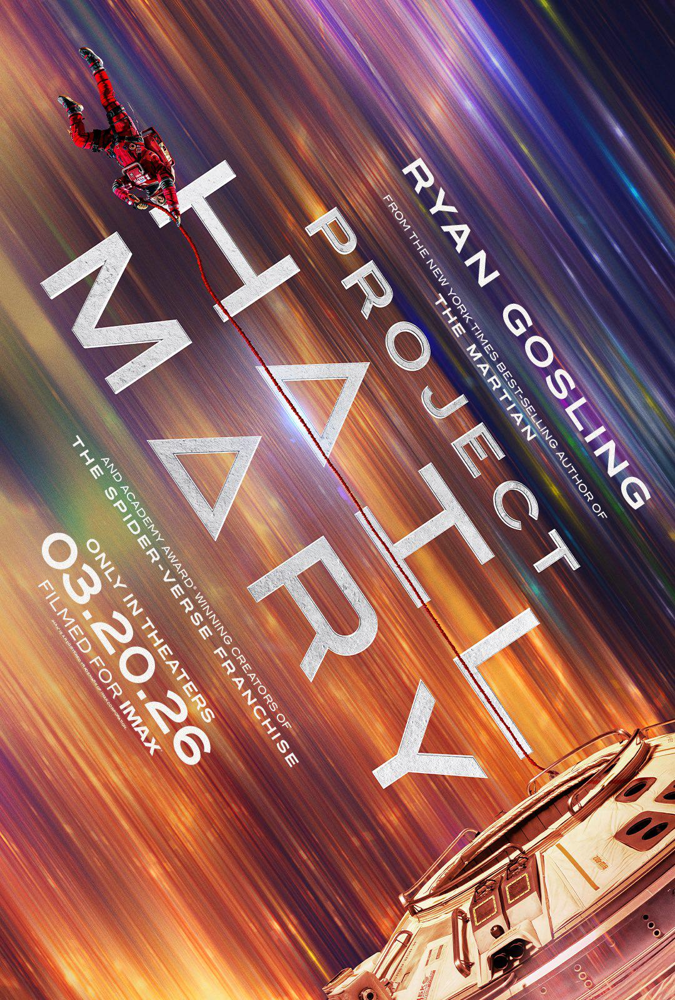

My favourite thing that I have watched is Andy Weir's Project Hail Mary.
The movie, much like the novel speaks about our main character, Dr. Ryland Grace as he travels the stars to complete this last-chance mission save the world. Except, he doesn't know that.
This heartfelt emotional journey across the stars was an entertaining, emotional, awe-inspiring visual and storytelling masterpiece. Most of the things science in the movie is based off real science, although it still is a hard sci-fi universe.
The movie takes some artistic liberty when it comes to a few things, Rocky's portrayal being one of them. This was done to not alienate any new audiences to the Project Hail Mary Universe, and to generally make Rocky appeal to a wider audience.
In my last assignment, I wrote about how I felt that both the Project Hail Mary novel and movie are both masterpieces. But I have to come clean, I lied. I like the movie more. Phil Lord and Christopher Millers' visual direction elevated Project Hail Mary to not only be a compelling story, but a visual spectacle as well. The visual representation of Red Astrophage, at the Petrova Line around Adrian scene come into mind.
I said it last time, and I'll say it once more. Everyone needs to watch (or read) Project Hail Mary.

Rocky says hi!